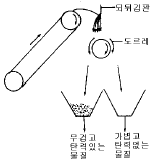
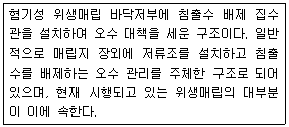
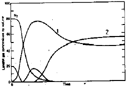

폐기물처리기사 (2004-09-05 기출문제)
1과목: 폐기물 개론
1. 쓰레기를 소각한 후 남은 재의 중량은 소각전 쓰레기 중량의 약 1/3이다. 재의 밀도가 2.5t/m3이고, 재의 용적이 3.3m3쯤 될때 원래 쓰레기의 중량은?
- 15t
- 25t
- 33t
- 37t
(정답률: 알수없음)

2. 500세대, 세대당 평균 가족수 4인인 아파트에서 배출하는 쓰레기를 2일마다 수거하는데 적재용량 8.0m3의 트럭 5대가 소요된다. 쓰레기 단위용적당 중량 140kg/m3이라면 1인 1일당 쓰레기 배출량은?
- 1.1kg/인.일
- 1.2kg/인.일
- 1.3kg/인.일
- 1.4kg/인.일
(정답률: 알수없음)
3. 고형분이 20%인 폐기물 12톤을 건조시켜 함수율이 40%가 되도록 하였다. 이때의 무게 감량은? (단, 비중은 1.0 기준)
- 5톤
- 6톤
- 7톤
- 8톤
(정답률: 알수없음)
4. 슬러지를 처리하기 위하여 생슬러지를 분석한 결과 수분은 95%, 고형물중 휘발성 고형물은 70%, 휘발성 고형물의 비중은 1.1, 무기성 고형물의 비중은 2.2였다. 생슬러지의 비중은?
- 1.101
- 1.084
- 1.⑤2
- 1.011
(정답률: 알수없음)
5. 다음은 pipe line(관로수송)에 의한 폐기물 수송에 대한 설명이다. 옳지 않은 것은?
- 단거리 수송에 적합하다.
- 잘못 투입된 물건은 회수하기가 곤란하다.
- 조대쓰레기에 대한 파쇄,압축등의 전처리가 필요하다
- 쓰레기 발생밀도가 낮은 곳에서 사용된다.
(정답률: 알수없음)
6. 지정폐기물인 폐석면의 입도를 분석한 결과에 의하면 입도누적 곡선상 최소입경으로 부터의 10%가 입경 3mm, 20%가 입경 5mm, 60%가 9mm 그리고 90%가 10mm 이었다. 이의 균등계수는?
- 3.0
- 4.0
- 6.0
- 1.0
(정답률: 알수없음)
7. 30만 인구의 도시쓰레기량이 년간 40만톤이고 수거 인부가 하루 500명이 동원되었다면 MHT는? (단, 1일 작업시간은 8시간, 연간 300일 근무한다.)
- 3 MHT
- 4 MHT
- 6 MHT
- 7 MHT
(정답률: 알수없음)
8. 채취한 쓰레기시료에 대한 분석절차를 가장 바르게 나타낸 것은?
- 밀도측정→ 분류→ 건조→ 물리적조성→ 절단 및 분쇄
- 밀도측정→ 물리적조성→ 건조→ 분류→ 절단 및 분쇄
- 절단 및 분쇄→ 밀도측정→ 건조→ 물리적조성→ 분류
- 절단 및 분쇄→ 건조→ 분류→ 물리적조성→ 밀도측정
(정답률: 알수없음)
9. 전단형 파쇄기에 관한 설명과 가장 거리가 먼 것은?
- 고정칼, 왕복 또는 회전칼과의 교합에 의하여 폐기물을 전단한다
- 충격파쇄기에 비하여 파쇄속도가 높다
- 충격파쇄기에 비하여 이물질 혼입에 약하다
- 충격파쇄기에 비하여 파쇄물의 크기를 고르게 할 수 있다
(정답률: 알수없음)
10. 스크린 선별에 관한 설명으로 알맞지 않는 것은?
- 일반적으로 도시폐기물 선별에 진동스크린이 많이 사용된다
- Post-screening의 경우는 선별효율의 증진을 목적으로 한다
- Pre-screening의 경우는 파쇄설비의 보호를 목적으로 많이 이용된다
- 트롬멜스크린은 경사지게 설치되어 10 - 30 rpm으로 회전한다
(정답률: 알수없음)
11. 고형물의 함량이 30%, 수분함량이 70%, 강열감량이 85%인 폐기물이 있다. 이 폐기물의 고형물중 유기물 함량은?
- 40%
- 50%
- 60%
- 65%
(정답률: 알수없음)
12. 자연상태의 쓰레기 밀도가 200㎏/m3 이었던 것을 적환장에 설치된 압축기에 넣어 압축시킨 결과 800㎏/m3 으로 증가하였다. 이때 부피의 감소율은?
- 65%
- 70%
- 75%
- 80%
(정답률: 알수없음)
13. 물질의 화학구조에 따른 활성탄 흡착정도에 대한 설명이 틀린 것은?
- 불포화유기물이 포화유기물보다 흡착이 잘된다.
- 수산기가 있으면 흡착율이 높아진다
- 할로겐족이 포함되어 있으면 일반적으로 증가한다
- 방향족의 고리수가 증가하면 일반적으로 증가한다
(정답률: 알수없음)
14. 유기물(포도당 C6H12O6) 1kg을 혐기성분해로 완전히 안정화시키는 경우 이론적으로 생성되는 메탄의 체적은? (단, 표준상태 기준)
- 약 0.62m3/kg· 포도당
- 약 0.53m3/kg· 포도당
- 약 0.45m3/kg· 포도당
- 약 0.37m3/kg· 포도당
(정답률: 알수없음)
15. 폐기물 중간처리기술로서의 압축은 부피감소가 주된 목적으로서 매립장의 수명을 연장시킬 수 있고 운반비의 절감 등을 꾀할 수 있다. 다음중 일반적으로 쓰이는 압축장치 중 저압력 압축기의 압력 강도 기준으로 적절한 것은?
- 700 KN/m2 이하
- 800 KN/m2 이하
- 900 KN/m2 이하
- 1,000 KN/m2 이하
(정답률: 알수없음)
16. X90=4.0 ㎝로 도시폐기물을 파쇄하고자 할 때, 즉 90%이상을 4.0 ㎝ 보다 작게 파쇄하고자 할 때 Rosin - Rammler모델에 의한 특성입자크기는? (단, n = 1로 가정 )
- 1.7 ㎝
- 2.8 ㎝
- 3.3 ㎝
- 3.8 ㎝
(정답률: 알수없음)
17. 폐기물 발생량 예측 방법이 아닌 것은?
- 경향법(trend method)
- 다중회귀모델(multiple regression model)
- 동적모사모델(dynamic simulation model)
- 물질수지법(material balance method)
(정답률: 알수없음)
18. 다음 그림은 어떠한 선별기를 나타낸 것인가?

- Stoners
- Jigs
- Secators
- Table
(정답률: 알수없음)
19. 폐기물 성분을 분석한 결과 가연성물질이 무게로 30%의 비율을 가졌다. 밀도가 500kg/m3인 쓰레기 5m3가 가지는 가연성 물질의 양은?
- 550kg
- 650kg
- 750kg
- 850kg
(정답률: 알수없음)
20. 다음중 수거노선 설정시 틀린 것은?
- 될 수 있는한 한번 간길은 다시 가지 않는다.
- 저지대에서 고지대로 상향식 수거노선을 택한다.
- 쓰레기 발생량이 많은 지역부터 먼저 수거한다.
- 가능한 한 시계방향으로 수거노선을 정한다.
(정답률: 알수없음)
2과목: 폐기물 처리 기술
21. 함수율 95% 분뇨의 유기탄소량이 TS의 35%, 총질소량은 TS의 10%이다. 이와 혼합할 함수율 20%인 볏짚의 유기탄 소량이 TS의 80%이고 총질소량이 TS의 4%라면 분뇨와 볏짚을 무게비 1:1로 혼합했을 때 C/N비는?
- 17.8
- 28.3
- 31.3
- 41.3
(정답률: 알수없음)
22. 슬러지 개량(conditioning) 방법과 거리가 먼 것은?
- 화학적 응집제를 투여한다.
- 밀폐된 상황에서 150-200℃ 온도로 반시간에서 한시간 정도 처리한다.
- 소석회를 주입한다.
- 알카리도가 높은 물로 씻는다.
(정답률: 알수없음)
23. 폐기물 매립지의 매립구조를 분류하면 여러방법이 있다 아래의 설명에 해당하는 매립구조 방법은?

- 개량형 혐기성 위생매립
- 준통기성 위생매립
- 혐기성 관리 위생매립
- 준호기성 위생매립
(정답률: 알수없음)
24. 반경이 2.5m인 trommel screen의 임계속도는?
- 27rpm
- 23rpm
- 19rpm
- 15rpm
(정답률: 알수없음)
25. 수분함량 95%(무게%)의 슬러지에 응집제를 소량 가해 농축시킨 결과 상등액과 침전 슬러지의 용적비가 3:5 이었다. 이 침전 슬러지의 함수율(%)은? (단, 응집제의 주입량은 소량이므로 무시한다. 농축전후 슬러지 비중은 1로 한다.)
- 88
- 90
- 92
- 94
(정답률: 알수없음)
26. 슬러지에 함유된 수분중 탈수가 가장 용이한 것은?
- 모관결합수
- 표면부착수
- 간극모관결합수
- 내부수
(정답률: 알수없음)
27. 어떤 도시의 폐기물중 불연성분 60%, 가연성분 40%이고, 이 지역의 폐기물 발생량은 1.2㎏/인.일이다. 인구 35,000명인 이 지역에서 불연성분 70%, 가연성분 80%을 회수하여 이 중 가연성분으로 RDF를 생산하려한다면 RDF의 연간 생산량은?
- 4,9⑤.6톤
- 6,438.6톤
- 13,440.6톤
- 17,640.6톤
(정답률: 알수없음)
28. 용매추출처리에 이용 가능성이 높은 유해폐기물의 특성과 가장 거리가 먼 것은?
- 미생물에 의해 분해가 힘든 물질
- 활성탄을 이용하기에는 농도가 너무 높은 물질
- 낮은 휘발성으로 인해 스트리핑하기가 곤란한 물질
- 물에 대한 용해도가 높아 회수성이 낮은 물질
(정답률: 알수없음)
29. 해안매립공법인 순차투입방법에 대한 설명으로 알맞지 않는 것은?
- 호안측에서부터 쓰레기를 순차적으로 투입하여 육지화 하는 방법이다
- 수면부와 육지부의 경계구분이 용이하여 작업효율을 높일 수 있다
- 수심이 깊은 처분장에서는 건설비 과다로 내수를 완전히 배제하기가 곤란한 경우에 이 방법을 택한다
- 바닥지반이 연약한 경우 쓰레기 하중으로 연약층이 유동하거나 국부적으로 두껍게 퇴적되기도 한다
(정답률: 알수없음)
30. 매립지의 침출수의 특성이 COD/TOC=2.5, BOD/COD=0.3 이라면 효율성이 가장 양호한 처리공정은? (단, 매립연한은 5년정도이며 COD는 5000mg/L이다)
- 역삼투
- 이온교환수지
- 화학적산화
- 화학적침전
(정답률: 알수없음)
31. 어느수역에 유출된 유해물질이 초기농도의 절반이 될 때까지 소요되는 시간이 1,000시간이었다면 이때 유해물질의 1차 감소 속도상수는?
- 0.0194/day
- 0.0166/day
- 0.0⑤9/day
- 0.00069/day
(정답률: 알수없음)
32. 슬러지 고형화 방법중 시멘트기초법에 관한 설명으로 적절치 못한 것은?
- 고형화 재료로 포틀랜드 시멘트를 이용한다.
- 고농도의 중금속 폐기물처리에 적합한 방법이다.
- 사용되는 시멘트의 양을 조절하여 강도를 조절할 수있다.
- 폐기물의 건조 또는 탈수를 통하여 수분을 균일화 한다.
(정답률: 알수없음)
33. 토양의 현장처리기법인 진공추출법의 주요인자와 가장 거리가 먼 것은?
- 오염물질의 증기압
- 토양의 공기투과성
- 헨리상수
- 분배계수
(정답률: 알수없음)
34. 매립지에 쓰이는 합성차수막 재료별 장단점에 관한 설명으로 알맞지 않는 것은?
- PVC : 가격은 저렴하나 자외선, 오존, 기후에 약하다
- HDPE : 온도에 대한 저항성이 높다
- CSPE : 산과 알카리에 약하다
- CPE : 접합상태는 양호하지 못하다
(정답률: 알수없음)
35. 다음 그림은 쓰레기 매립지에서 발생되는 가스의 성상이 시간에 따라 변하는 과정을 보이고 있다. 곡선①과 ②가 나타내는 가스의 종류로 맞게 된 것은?

- ① CO2 ② CH4
- ① CH4 ② CO2
- ① O2 ② CH4
- ① H2 ② CO2
(정답률: 알수없음)
36. 점토가 매립지의 차수막으로 적합하기 위한 기준으로 알맞는 것은?
- 점토 및 미사토함유량: 10% 이상
- 소성지수: 10% 이하
- 액성한계: 30% 이상
- 직경이 2.5cm 이상인 입자 함유량: 5% 이하
(정답률: 알수없음)
37. 혐기성 소화단계를 가스분해단계, 산생성단계, 메탄생성 단계로 나눌 때 산생성단계에서 생성되는 물질과 가장 거리가 먼 것은?
- 글리세린
- 케톤
- 알콜
- 알데하이드
(정답률: 알수없음)
38. 1일 쓰레기의 발생량이 50톤인 지역에서 트렌치 방식으로 매립장을 계획한다면 1년간 필요한 토지 면적은? (단, 도랑의 깊이는 5m이고 쓰레기의 압축율은 60%, 밀도는 400㎏/m3이다. 기타조건은 고려않함 )
- 3,650m2/년
- 5,475m2/년
- 7,300m2/년
- 9,125m2/년
(정답률: 알수없음)
39. 연직차수막 시설에 관한 내용중 알맞지 않은 것은?
- 차수막 보강시공이 가능하다.
- 공법은 Earth Dam의 코아 등이 있다.
- 지하수 집배수시설이 필요하다.
- 차수성의 확인이 어렵다.
(정답률: 알수없음)
40. 함수율이 96%이고 고형물질중 휘발분이 50%인 슬러지 500m3를 혐기성소화하여 함수율 90%의 소화슬러지가 얻어졌다면 이때 소화슬러지의 발생량은? (단, 소화전후 슬러지의 비중은 1이고 소화과정에서 생슬러지의 휘발분은 50%가 분해됨)
- 100 m3
- 150 m3
- 200 m3
- 250 m3
(정답률: 알수없음)
3과목: 폐기물 소각 및 열회수
41. 탄소(C) 3Kg을 완전 연소시킨다면 산소가 몇 Nm3 필요한가?
- 4.60
- 5.60
- 6.60
- 7.60
(정답률: 알수없음)
42. 미분탄 연소에 관한 기술이다. 틀린 것은?
- 대형과 대용량 설비에 적합하다.
- 사용연료의 범위가 넓다
- 연소제어가 용이하여 부하변동에 쉽게 적응할 수있다.
- 완전연소가 가능하여 비산재의 발생이 적다.
(정답률: 알수없음)
43. 열교환기중 굴뚝에 설치되며 보일러 전열면을 통과한 연소가스의 열로 보일러 급수를 예열하여 보일러의 효율을 높이는 장치로 그 부수효과로는 급수예열에 의해 보일러수와의 온도차가 줄어들어 보일러 드럼에 발생하는 열응력이 경감되는 것은?
- 과열기
- 절탄기
- 재열기
- 공기예열기
(정답률: 알수없음)
44. 증기터어빈 분류관점이 증기작동방식인 경우의 터어빈 형식으로 가장 알맞는 것은?
- 혼합식 터어빈
- 배압 터어빈
- 축류 터어빈
- 직결형 터어빈
(정답률: 알수없음)
45. 다음중 분해연소에 대한 설명으로 가장 알맞는 것은?
- 휘발성 성분이나 열분해하기 쉬운 성분을 거의 함유하지 않는 고체연료의 연소에서 볼 수 있다.
- 글리세린, 파라핀과 같은 물질이 분해하여 기화됨으로서 발화 연소된다.
- 셀루로즈계 물질, 석탄등의 고체물질의 연소에서 볼 수 있다.
- 열분해로 발생한 휘발분이 점화되지 않고 분해되어 적열된다.
(정답률: 알수없음)
46. 5%의 황을 포함하는 중유를 공기비 1.7로 완전연소시킬 때 습윤연소배기가스중의 SO2의 농도(ppm)는? (단, 폐기물의 저위발열량은 3,700 kcal/kg, Rosin근사식 적용)
- 약 4,500
- 약 6,200
- 약 8,800
- 약 9,600
(정답률: 알수없음)
47. 열분해에 대한 설명중 잘못된 것은?
- 저온법과 고온법이 있으며 저온은 500 - 900℃정도를 말한다.
- 열분해로 생성되는 연료성질은 운전온도, 가열속도, 폐기물의 성질등이 결정짓는다.
- 환원성분위기로 Cr+3가 Cr+6로 변화하지 않는다.
- 황분, 중금속분이 재중에 고정되는 확율이 낮다.
(정답률: 알수없음)
48. 열분해장치의 종류와 가장 거리가 먼 것은?
- 고정상
- 스토커상
- 유동상
- 부유상
(정답률: 알수없음)
49. 폐기물 소각공정에서 발생하는 소각재 중 비산재(FlyAsh)의 안정화 처리기술과 가장 거리가 먼 것은?
- 용매추출
- 이온고정화
- 약제처리
- 용융고화
(정답률: 알수없음)
50. 맹독성 물질을 함유하고 있는 폐PCB, 폐농약 PCDD등을 주로 소각시키기 위하여 개발된 소각로는?
- 플라즈마 소각로
- 촉매식 소각로
- 다단유동층 소각로
- 고온용융 소각로
(정답률: 알수없음)
51. 폐기물 소각로의 종류중에서 유동상식(Fluidized BedType) 방식의 장점이 아닌 것은?
- 과잉공기량이 상대적으로 적어 배출가스량이 적다
- 반응시간이 빨라 소각시간이 짧다
- 기계적 구동부분이 적어 고장율이 낮다
- 상으로부터 찌꺼기의 분리가 용이하다
(정답률: 알수없음)
52. 도시쓰레기 소각로를 설계하고자 한다. 다음 자료를 이용하여 소각로의 화격자면적을 구하면?(단, 쓰레기 소각량:100ton/day, 쓰레기삼성분:수분-50%, 휘발분-40%, 회분-10% 화상부하율:300㎏/m2· hr, 하루가동시간:12hr)
- 약 6m2
- 약 14m2
- 약 19m2
- 약 28m2
(정답률: 알수없음)
53. 다단로 방식소각로의 특징에 대한 설명과 가장 거리가 먼 것은?
- 체류시간이 짧아 온도반응이 신속하다
- 많은 연소영역이 있으므로 연소효율을 높일 수 있다
- 수분함량이 높은 슬러지소각에 적당하다
- 휘발성이 적은 폐기물의 연소에 유리하다
(정답률: 알수없음)
54. 평균 발열량이 8,000kcal/㎏인 P시의 폐기물을 소각하여, 그 지역 난방에 필요한 열에너지를 얻고자 한다. 이 때 지역난방에 필요한 난방수를 하루에 600ton 얻기 위하여 필요한 폐기물의 양(㎏/d)은? (단, 난방보일러의 효율은 65%, 보일러 급수온도는 12℃ 보일러출구 수온도 92℃, 물의 비열은 1.0 kcal/㎏℃이다)
- 약 4250
- 약 6150
- 약 7610
- 약 9230
(정답률: 알수없음)
55. 탄소 80 %, 수소 10 %, 산소 8 %, 황 2 %로 조성된 중유의 연소에 필요한 이론 공기량(AO)은?
- 약 9.1 (Sm3/㎏)
- 약 9.3 (Sm3/㎏)
- 약 9.6 (Sm3/㎏)
- 약 9.9 (Sm3/㎏)
(정답률: 알수없음)
56. 저발열량이 3500kcal/Sm3이고, 이론습연소가스량이 10Sm3/Sm3 인 연료의 이론연소 온도는? (단, 가스의 비열은 0.35kcal/Sm3 ℃ 이다. 공급공기온도는 15℃로 가정함)
- 895(℃)
- 915(℃)
- 1015(℃)
- 1115(℃)
(정답률: 알수없음)
57. 플라스틱연소 특징을 잘못 설명한 것은?
- 연소시 용융되어 적하연소된다
- 연소시 부식 및 유해가스가 발생된다
- 연소특성이 비교적 단순하다
- 다량연소시 이상고온이 유도된다
(정답률: 알수없음)
58. 스토카식 소각로의 열부하가 45,000Kcal/m3.hr 이며, 폐기물의 저위발열량이 600Kcal/kg일 때 소각로의 부피는? (단, 폐기물의 소각량은 1일 12톤이며, 소각로 가동시간은 1일 8시간 가동기준이다 )
- 10m3
- 12m3
- 15m3
- 20m3
(정답률: 알수없음)
59. 발열계에서 얻어진 중유의 고위발열량이 3000kcal/kg이었다면 소각로 설계에 사용되는 발열량은? (단, 중유중 수소함량 5%, 수분함량 60% 이었다. )
- 1870kcal/kg
- 2175kcal/kg
- 2290kcal/kg
- 2370kcal/kg
(정답률: 알수없음)
60. 중유 300kg/hr를 과잉공기계수 1.2로 연소시킬 때 연소실의 공기온도를 420℃로 올리면 열발생율은 상온공기(20℃)의 경우보다 몇% 정도 증가하는가? (단, 중유의 저위발열량: 10,000kcal/kg, 이론공기량:10Sm3/kg, 공기의 평균비열: 0.31 kcal/Sm3 ℃)
- 5.2%
- 7.4%
- 9.2%
- 14.9%
(정답률: 알수없음)
4과목: 폐기물 공정시험기준(방법)
61. 흡광광도법에 의하여 시안을 분석할 경우, 간섭물질의 제거방법 중 옳지 않은 것은?
- 잔류염소가 함유된 시료는 L-아스코르빈산 또는 아비산나트륨 용액을 넣어 제거한다.
- 황화합물이 함유된 시료는 초산아연용액을 넣어 제거한다.
- 다량의 유지류가 함유된 시료는 pH를 6∼7로 조절한 후 노말헥산이나 클로로포름을 넣어 분리시킨다.
- 철이온이 공존할 경우 피로인산나트륨용액을 넣어 공침시킨다.
(정답률: 알수없음)
62. 수산화나트륨(NaOH) 40%(무게기준) 용액을 조제한 후 이 중 100g을 취하여 다시 물에 녹여 2000㎖로 하였다. 이 용액은 몇 수산화나트륨(NaOH) N농도인가? (단, Na원자량: 23)
- 0.1N
- 0.5N
- 1N
- 2N
(정답률: 알수없음)
63. 폐기물이 적재되어 있는 5톤 미만의 차량에서 시료를 채취할 경우에 시료 채취 갯수에 대하여 맞는 것은?
- 수직 및 평면상으로 9등분한 후 각 등분마다 시료를 채취한다
- 임의의 5개소에서 100g씩 균등량 혼합하여 채취한다.
- 평면상에서 6등분한 후 각 등분마다 시료를 채취한다
- 분쇄하여 균일하게 한 후 필요한 양을 임의의 5개소에서 깊이에 따라 3회에 나누어 채취한다.
(정답률: 알수없음)
64. 수은분석 시험에서 시료중 벤젠, 아세톤등 휘발성 유기물질은 253.7m에서 흡광도를 나타낸다. 이때 어떻게 처리하여야 하는가?
- 과황산칼륨으로 분해한 후 염화제일주석을 넣는다.
- 황산을 넣어 가열분해하고 방냉 후 시험한다.
- 과망간산칼륨 분해후 헥산으로 추출분리한 다음 시험한다.
- 염산히드록실 아민용액을 과잉으로 넣은 후 공기로 통기하여 축출한다.
(정답률: 알수없음)
65. 일반적으로 사용되는 흡광광도 분석장치에 대한 설명으로 적합하지 않은 것은?
- 광원부, 파장선택부, 시료부, 측광부 등으로 구성된다
- 광전분광광도계는 파장선택부에서 단색화장치를 사용한 장치로 구조에 따라 단광속형과 복광속형이 있다
- 흡수셀은 재질에 따라 유리제는 주로 가시 및 근적외부, 석영제는 자외부, 플라스틱제는 근적외부의 파장범위를 측정할 때 사용한다.
- 측광부의 광전측광에 사용되는 광전도셀은 주로 자외 내지 가시파장범위에서 사용된다.
(정답률: 알수없음)
66. 가스크로마토그래피법에서 일반적으로 5-30분 정도에서 측정하는 피이크의 유지시간은 반복시험을 할 때 몇 % 오차 범위 이내이어야 하는가?
- ± 15%
- ± 10%
- ± 5%
- ± 3%
(정답률: 알수없음)
67. 가스크로마토그래피 장치의 분리관 충전 물질에는 흡착형 충전물질과 분배형 충전물질이 있다. 다음중 분배형 충전물질의 담체로써 알맞는 것은?
- 규조토
- 실리카겔
- 알루미나
- 합성제올라이트
(정답률: 알수없음)
68. 반고상폐기물의 고형물 함량기준으로 가장 알맞는 것은?
- 5%이상 15%미만
- 5%이상 15%이하
- 5%초과 15%미만
- 5%초과 15%이하
(정답률: 알수없음)
69. 유기물함량이 비교적 높지 않고 금속의 수산화물, 산화물, 인산염 및 황화물을 함유하고 있는 시료에 적용되는 전처리 방법으로 적절한 것은?
- 질산 - 염산
- 질산 - 황산
- 질산 - 과염소산
- 질산 - 과염소산 - 불화수소산
(정답률: 알수없음)
70. 유기할로겐화합물, 니트로화합물 및 유기 금속화합물을 선택적으로 검출할 수 있는 가스크로마토그래피의 검출기는?
- ECD
- TCD
- FPD
- FID
(정답률: 알수없음)
71. 유도결합 플라즈마 발광광도계의 장치의 설정조건에 관한 설명으로 알맞지 않는 것은?
- 고주파출력: 수용액시료의 경우 800 - 1400kw로 설정
- 가스의 유량: 냉각가스는 10 - 18 ℓ /min, 보조가스는 0 - 2 ℓ /min 그리고 운반가스는 0.5 - 2 ℓ /min 범위에서 설정된다.
- 플라즈마 발광부 관측 높이: 유도코일 상단으로부터 15 - 18mm의 범위에서 측정하는 것이 보통이다.
- 분석선(파장)의 설정: 가장 감도가 높은 파장을 설정한다.
(정답률: 알수없음)
72. 용출액 중의 PCBs 시험방법(가스크로마토그래프법)을 설명한 것으로 알맞지 않는 것은?
- 용출액 중의 PCBs 를 헥산으로 추출한다
- 전자포획형 검출기는 사용한다
- 정제는 활성탄칼럼을 사용한다
- 유효측정농도는 0.00⑤mg/L 이상으로 한다
(정답률: 알수없음)
73. 폐기물의 강열감량 측정을 위한 가열 온도 및 시간은? (단, 시료를 탄화시킨후 )
- 600± 25℃, 3시간
- 600± 25℃, 1시간
- 550± 25℃, 3시간
- 550± 25℃, 1시간
(정답률: 알수없음)
74. 취급 또는 저장하는 동안에 이물이 들어가거나 또는 내용물이 손실되지 아니하도록 보호하는 용기는?
- 밀폐용기
- 기밀용기
- 밀봉용기
- 차광용기
(정답률: 알수없음)
75. 국내 용출시험법의 용출조작에 대한 설명중 가장 적합한 것은?
- 시료액의 조제가 끝난 혼합액을 상온, 상압에서 진탕 한다.
- 진탕기의 진탕회수는 매분당 약 100회 그리고 진폭은 4 - 5cm로 한다.
- 진탕기를 사용하여 8시간 연속 진탕한 다음 0.1㎛의 유리섬유여지로 여과한다.
- 여과가 어려운 경우 농축기를 사용하여 30분이상 농축분리한 다음 상등액을 적당량 취하여 용출시험용 검액으로 한다.
(정답률: 알수없음)
76. 일반적으로 대상폐기물의 양이 5000ton 이상인 경우의 시료 최소 수는?
- 30
- 60
- 80
- 90
(정답률: 알수없음)
77. 다음은 폐기물 공정시험법상 항목별 시험방법을 연결한 것이다. 이중 잘못된 것은?
- 시안-피리딘 피라졸론법
- 수은-환원기화법
- 카드뮴-디페닐카르바지드법
- 납-디티존법
(정답률: 알수없음)
78. 흡광광도법에 의한 수은 측정시, 전처리된 시료에서 수은 의 분리추출을 위하여 사용되는 용액은?
- 과망간산칼륨
- 염산히드록실아민
- 염화제일주석
- 디티존사염화탄소
(정답률: 알수없음)
79. 흡광광도계에서 광원으로 부터 나오는 빛의 50%를 흡수 하였다면 흡광도는?
- 0.222
- 0.260
- 0.301
- 0.352
(정답률: 알수없음)
80. CN의 전극법사용시 시료와 표준액의 온도차는 얼마이어야 하나?
- ± 1℃
- ± 2℃
- ± 3℃
- ± 4℃
(정답률: 알수없음)
5과목: 폐기물 관계 법규
81. 폐기물처리 담당자가 이수하여야 할 교육과정의 교육기간으로 알맞은 것은?
- 3일 이내
- 5일 이내
- 7일 이내
- 14일 이내
(정답률: 알수없음)
82. 지정폐기물의 분류번호'04-00-00'이 의미하는 것은?
- 특정시설에서 발생되는 폐기물
- 부식성폐기물
- 유해물질함유 폐기물
- 폐유기용제
(정답률: 알수없음)
83. 영업정지기간 중에 영업을 한 폐기물처리업자에게 부과되는 벌칙기준으로 적절한 것은?
- 6월 이하의 징역 또는 3백만원이하의 벌금
- 1년 이하의 징역 또는 5백만원이하의 벌금
- 2년 이하의 징역 또는 1천만원이하의 벌금
- 3년 이하의 징역 또는 2천만원이하의 벌금
(정답률: 알수없음)
84. 대통령이 정하는 폐기물처리시설을 설치, 운영하는 자는 당해 폐기물처리시설의 설치, 운영으로 인하여 주변지역에 미치는 영향을 몇년마다 조사하여 그 결과를 환경부장관에게 제출하여야 하는가?
- 7년
- 5년
- 3년
- 2년
(정답률: 알수없음)
85. 폐기물처리업자에게 영업정지에 갈음하여 처분할 수 있는 과징금의 최대액수는?
- 5억원
- 3억원
- 2억원
- 1억원
(정답률: 알수없음)
86. 폐기물처리시설을 설치,운영하는 자는 처리시설(소각시설)에서 배출되는 오염물질의 측정결과를 얼마동안 보존하여야 하는가?
- 5년
- 3년
- 2년
- 1년
(정답률: 알수없음)
87. 시장, 군수, 구청장이 관할구역안의 폐기물처리에 관한 기본계획 수립시 포함되어야 할 사항과 가장 거리가 먼것은?
- 소요재원의 확보계획
- 폐기물의 감량화 및 재활용 등 자원화에 관한 사항
- 폐기물의 수집,운반 현황 및 계획에 관한 사항
- 폐기물의 종류별 발생량 및 장래의 발생예상량
(정답률: 알수없음)
88. 폐기물처리시설(매립시설 제외)을 폐쇄하고자 하는 자는 당해시설의 폐쇄 예정일 몇월 이전에 폐쇄신고서를 제출하여야 하는가?
- 1월
- 2월
- 3월
- 6월
(정답률: 알수없음)
89. 기술관리인을 두어야 할 폐기물처리시설에 대한 기준으로 알맞는 것은?
- 절단시설로서 1일 처리능력이 200톤 이상인 시설
- 연료화시설로서 1일 처리능력이 10톤 이상인 시설
- 사료화시설로서 1일 처리능력 5톤 이상인 시설
- 멸균분해시설로서 1일 600킬로그램이상인 시설
(정답률: 알수없음)
90. 대통령령이 정하는 '폐기물의 처리명령대상이 되는 조업 중단기간'은? (단, 동물성 잔재물 및 감염성폐기물중 조직물류 등 부패 변질의 우려가 있는 폐기물의 경우)
- 30일
- 15일
- 7일
- 3일
(정답률: 알수없음)
91. 폐기물의 수집, 운반, 보관시 종류별, 성상별로 재활용가능성 여부, 가연성 또는 불연성 여부등에 따라 구분하여 수집,운반,보관하여야 한다. 그 예외되는 경우로 알맞지 않는 것은?
- 재활용가능성여부, 연소가능성여부가 불확실하여 정확한 구분이 불가능한 경우
- 처리기준과 방법이 동일한 폐기물로서 동일한 폐기물처리시설 또는 동일한 장소에서 처리하는 경우
- 폐기물의 발생 또는 배출당시 2종류 이상의 폐기물이 혼합되어 발생 또는 배출된 경우
- 시,군,구의 분리수집계획 또는 지역적 여건 등을 고려하여 시,군,구의 조례가 정하는 바에 따라 그 구분을 달리 정하는 경우
(정답률: 알수없음)
92. 소각시설의 측정대상 오염물질인 다이옥신의 측정주기 기준으로 적절한 것은?(단, 시간당 처리능력이 2톤 이상인 소각시설인 경우)
- 1월에 1회 이상
- 3월에 1회 이상
- 6월에 1회 이상
- 12월에 1회 이상
(정답률: 알수없음)
93. 시· 도지사, 시장· 군수· 구청장 또는 지방환경관서의 장이 관계공무원으로 하여금 사업장 등에서 배출되는 폐기물 또는 재활용한 제품의 성분, 유해물질함유여부의 검사를 위한 시험분석을 의뢰할 수 있는 기관이 아닌 것은?
- 유역환경청
- 환경관리공단
- 산업기술시험원
- 수도권매립지관리공사
(정답률: 알수없음)
94. 폐기물처리업의 변경신고 사항과 가장 거리가 먼 것은?
- 상호의 변경
- 임시차량의 증차 또는 운반차량의 감차
- 연락장소 또는 사무실 소재지의 변경
- 대표자 변경(권리, 의무를 승계하는 경우 포함)
(정답률: 알수없음)
95. 폐기물처리시설중 음식물류폐기물처리시설의 검사기관이 아닌 것은?
- 환경관리공단
- 식품개발연구원
- 시,도 보건환경연구원
- 산업기술시험원
(정답률: 알수없음)
96. 지정폐기물인 유해물질함유 폐기물(환경부령이 정하는 물질을 함유한 것임)에 관한 설명으로 알맞지 않는 것은?
- 광재(철광원석의 사용으로 인한 고로슬래그를 제외한다)
- 분진(대기오염방지시설에서 포집된 것에 한하되, 소각시설에서 발생되는 것을 제외한다)
- 폐내화물(재벌구이전에 유약을 바른 도자기 조각은 제외한다)
- 폐흡착제 및 폐흡수제(광물유, 동물류 및 식물류의 정제에 사용된 폐토사를 포함한다)
(정답률: 알수없음)
97. 사후관리 이행 보증금의 사전적립대상이 되는 '폐기물 매립시설의 규모기준'으로 가장 적합한 것은?
- 면적 3천 300m2 이상인 시설
- 면적 1만m2 이상인 시설
- 용적 3천 300m3 이상인 시설
- 용적 1만m3 이상인 시설
(정답률: 알수없음)
98. 폐기물의 중간처리시설중 열처리조합시설과 가장 거리가 먼 것은?
- 일반소각시설과 고온소각시설이 조합된 시설
- 일반소각시설과 고온용융시설이 조합된 시설
- 일반소각시설과 고온열회수시설이 조합된 시설
- 일반소각시설과 열분해시설이 조합된 시설
(정답률: 알수없음)
99. 감염성폐기물의 수집, 운반차량의 차체 도색은 어떤 색으로 하여야 하는가?
- 청색
- 백색
- 황색
- 녹색
(정답률: 알수없음)
100. 다음의 폐기물처리시설중 중간처리시설인 기계적처리시설에 해당하는 것은?
- 연료화시설
- 응집,침전시설
- 시멘트 소성로시설
- 고형화시설
(정답률: 알수없음)
쓰레기의 밀도를 구하기 위해, 쓰레기의 중량을 구해야 한다. 쓰레기의 용적은 9.9m3이므로, 쓰레기의 중량은 9.9m3 x 밀도 = 9.9m3 x (1/2.5)t/m3 = 3.96t 이다.
따라서, 원래 쓰레기의 중량은 3.96t 이므로, 가장 가까운 정답은 "25t"가 아니라 "15t"이다.